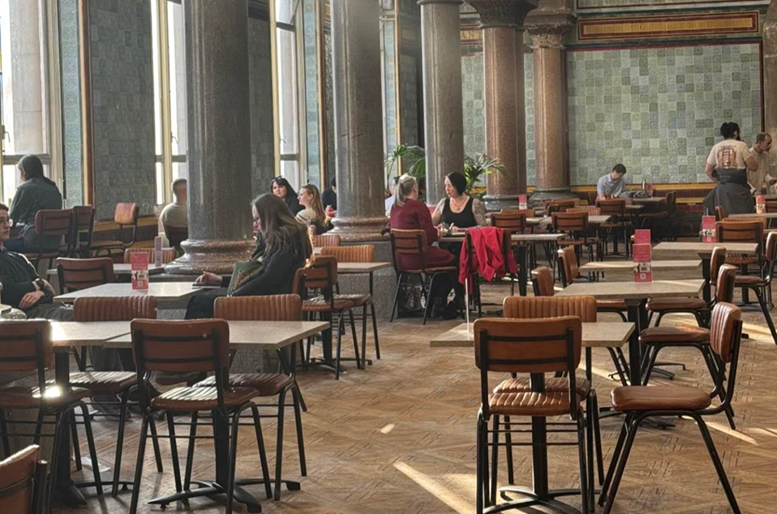
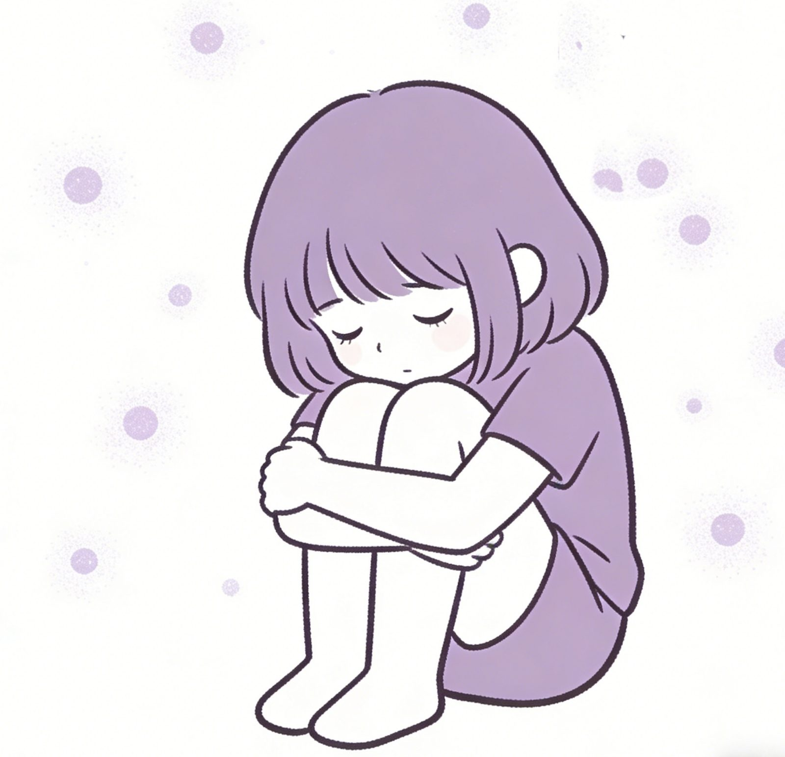

“I always felt like everyone in the room was watching me. Writing here under a nickname made it easier to say what I could never say out loud.”
Anonymous member

Here is a gentle, safe community for people living with social anxiety. Sharing, reflecting, and connecting at Harborly without fear or pressure.
12.1% Adults
9.1% Adolescents
1.3% Severe Impairment
U.S. adults experience social anxiety disorder at some point in their lives.
Adolescents are estimated to have social anxiety disorder.
A smaller group of adolescents experience severe impairment due to SAD.
Source: NIMH – Social Anxiety Disorder Statistics
Research suggests that social media itself is not the whole problem.
Most of the emotional harm happens when constant checking and comparing
turn into
Hover over each circle to see what the data means
Social media pressure often becomes harmful not because you are online, but because it triggers FoMO. Thus, Harborly is here to reduce comparison, slow down the pace, and help you reconnect in a calmer way.

Click to reveal the safe space

A calmer, lower-pressure space
Social Anxiety Disorder (SAD) affects how people think, feel and connect with others.
Many experience intense worry about being judged, which can make everyday situations — speaking up, meeting new people, or even asking for help — feel overwhelming.
At Harborly, we support anyone who feels anxious in social settings and wants a calm, understanding space to grow at their own pace.
Help create gentle, low-pressure activities for people with social anxiety. Volunteers support online events, moderate discussions, and help build a welcoming atmosphere — no experience required, just empathy and patience.
We welcome qualified psychologists, counsellors, and therapists who want to contribute their expertise in a non-clinical, community-based setting. Your role is guidance, not diagnosis.
Everyone deserves a safe place to talk, learn, and heal. Harborly offers emotional support, peer connection, and guidance — all at your own pace.
Join our community to explore resources, share your story, or start your journey today.